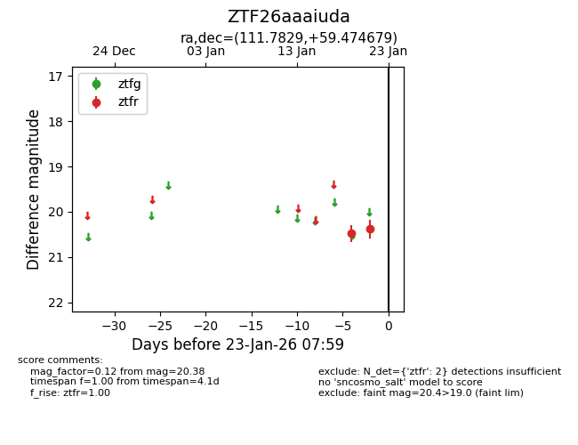
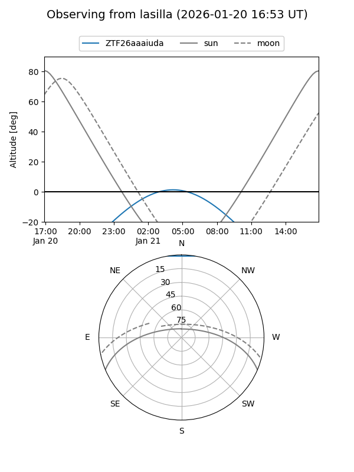
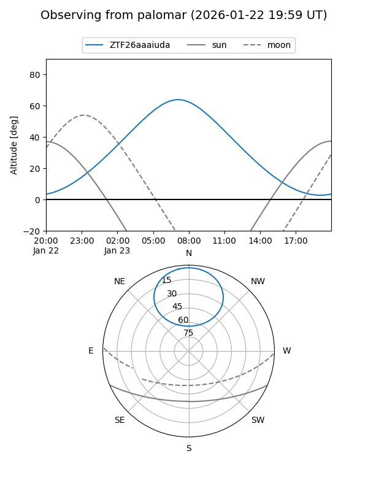

ZTF26aaaiuda
Target ZTF26aaaiuda at 2026-01-23 08:01
Aliases and brokers:
FINK: link
Lasair: link
ALeRCE: link
alt names
ZTF26aaaiuda (ztf,fink_ztf)
Coordinates:
equatorial (ra, dec) = 111.7829,+59.47468
equatorial (HMS+DMS) = 07:27:07.89,+59:28:28.84
galactic (l, b) = (157.4087,+27.57469)
Flags:
Photometry:
last ztfr=20.38
2 ztfr detections
Lightcurve

Visibility


Additional plots